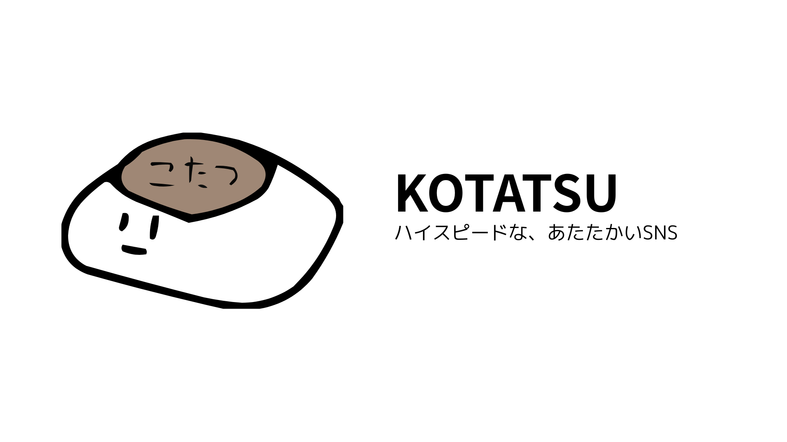
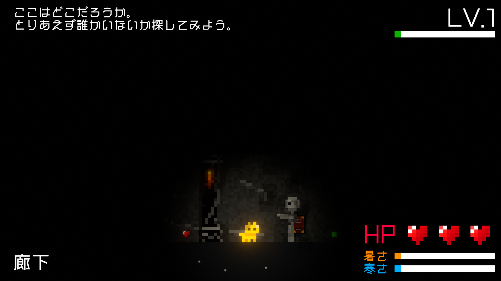
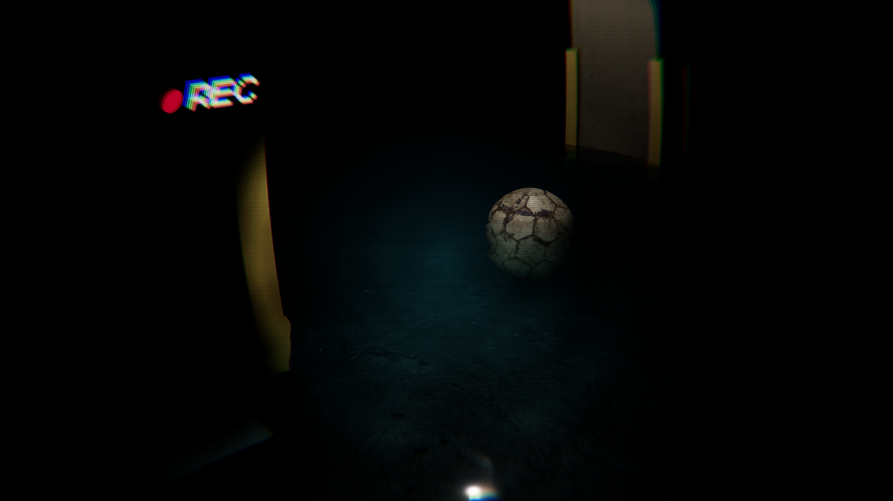
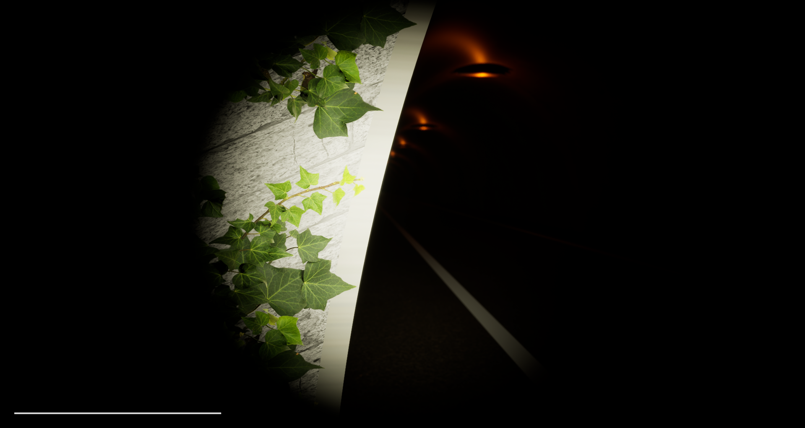
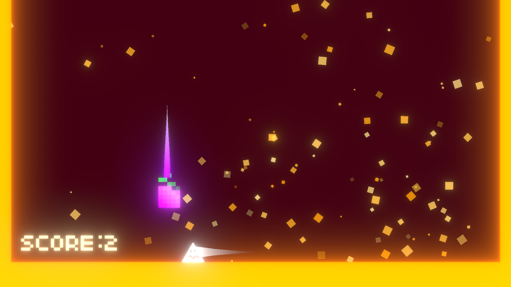
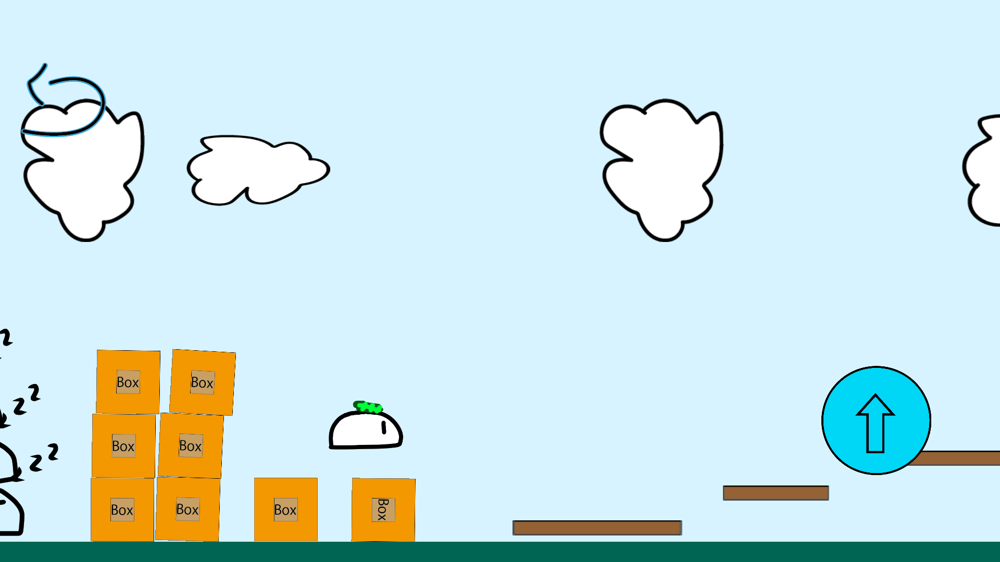

Portfolio
Development

KOTATSU
掲示板風SNS。1時間毎に行われるトピックの入れ替えや、ランダムで表示される「今日の投稿」など、
オープン型SNSでありながらリアルタイム性と小さな繋がりが両立できるよう意識した機能を多数実装しています。


(TBD)
ARPGの予定。猫の可愛さでアンデッドを浄化していくゲーム。
幅広い育成やランダム生成のダンジョンなど、長く遊べるようになるよう設計中です。


(TBD)
ホラー。地下駐車場を舞台とした、階を上がるごとに少しづつ変わっていく景色と環境に順応しながら脱出を目指すゲーム。
ゲームオーバーになることで攻略法を見つける、いわゆる死にゲーの要素を取り入れて開発を進めています。


旧霊山隧道（仮）
ホラー。かつて旧隧道で起きた一連の事件を再現する怪異を、事件の記録を参考に回避し、脱出を目指すゲーム。
ゲームプレイを通して事件の真相を知ることができるような構成で開発中です。

GRAPE CRASH
2~3作目くらい。ぶどうを壊してみかんを避ける謎のゲーム。データ消えたので壊れたランキング機能が直せない。
UnityのPost
Processingを知った直後だったせいで、調子に乗ってbloomかけすぎました。

豆腐海を渡る
小6の頃、初めて作ったゲーム。かなりクリア難易度が高い。
いまだに結構好きなので続編を作ろうか考え中です。